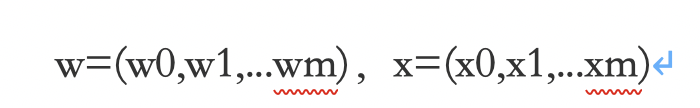

感知机原理及Python实现
摘要
感知机（Perceptron）被视为最简单形式的前馈神经网络，是二类线性分类模型，旨在求出将线性训练数据进行线性划分的分离超平面。本文简述了感知机的基本组成模型及原理，给出基于误分类的损失函数，利用梯度下降法对损失函数进行极小化，从而求得超平面参数，得到感知机模型，并对训练得到的模型进行测试实验。
关键词：感知机（Perceptron）；梯度下降；超平面；损失函数
Principle and implementation of perceptron
Abstract：Perceptron, regarded as the simplest feed-forward neural network, is a second-class linear classification model, which is designed to find the separation hyperplane for linear division of linear training data. In this paper, the basic component model and principle of perceptron are briefly introduced, loss function based on misclassification is given, loss function is minimized by gradient descent method, hyperplane parameters are obtained, perceptron model is obtained, and the trained model is tested.
正文
生成线性可分的二维空间两类样本数据，编写计算机程序，完成感知器对这组数据的学习过程:
A. 观察学习算法的收敛过程.
B. 改变算法的初始值,观察初始化对收敛结果的影响.
C. 观察两类数据的样本不平衡情况对性能的影响.
生成线性不可分的二维空间两类样本数据，做上述同样的实验。根据你的实验和分析，给出结论。
针对上述的线性可分问题，如果采用Cross validation来评价分类器的推广能力，你会得到怎样的观察，并请给出结果和结论。
原理
感知机
假设输入空间（特征空间）是x⊆Rn，输出空间是＝{+1,-1}。输入x∊x表示实例的特征向量，对应于输入空间（特征空间）的点；输出y∊表示实例的类别。由输入空间到输出空间的如下函数
称为感知机。其中，w和b为感知机模型参数，w∊Rn叫作权值（weight）或权值向量（weight vector），b∊R叫作偏置（bias），w·x表示w和x的内积。sign是符号函数
即：
感知机是二分类的线性模型，属于判别模型。通过对网络权值的训练，可以使感知器对一组输人矢量的响应达到元素为 -1或1的目标输出，从而实现对输人矢量分类的目的，其输入是实例的特征向量，输出的是事例的类别，属于判别模型。单层感知器可以计算逻辑或，逻辑与，逻辑非等运算，但是不能计算异或。因为异或不是平面线性可分的。
模型
感知机的假设空间是定义在特征空间的所以线性分类模型，或线性分类器，即函数集合：
对感知机的几何解释：
其对应于特征空间中的一个超平面S，其中w是超平面的法向量，b是超平面的截距。如图，超平面将特征空间划分为两个部分。位于两部分的点分别被分为正负两类。
假设训练数据集是线性可分的，感知机学习的目标是求得一个能够将训练数据集正实例点和负实例点完全正确分开的分离超平面。如果是非线性可分的数据，则最后无法获得超平面
如果存在某个超平面能将数据集的正实例点和负实例点分开，则称数据集为线性可分数据集。
W·X + b = 0
w=(w0,w1,...wm)，x=(x0,x1,...xm)
损失函数
为了找出这个超平面，需要定义一个损失函数来度量错误的程度，损失函数值越小，模型就越好。然后通过某种算法找到其极小化值
A、误分类点x到超平面S的距离如下： ，
对于分类错误的数据 (Xi，Yi)
误分类点Xi到超平面S的距离：

设误分类点集为M，则所有误分类点到超平面S的总距离：
因为感知机不需要关心得到的超平面到平面的距离的数值，为了简化计算故不考虑\(-\frac{1}{\left \| w \right \|}\)得损失函数：
我们可以知道，感知机分类完全正确时，L（w，b）= 0
算法
感知机学习算法是误分类驱动的，具有简单且易于实现的优点。
我们的目的是求参数 w，b 使得损失函数极小化，即
采取梯度下降法（stochastic gradient descent）：梯度下降法不断极小化目标函数，每次随机选取一个误分点并使其梯度下降
算法实现描述：
输入：训练数据集 T: ，学习率
输出：（w，b） && 感知机模型
任意取一个超平面，
在训练集中选取数据
如果 \(y_{i}\left ( w\cdot x_{i}+b \right )\leq 0\)
- 转至（b），直到训练集中没有误分类点
原理：
通过不断修正w，b的值，使超平面不断向误分类点移动，直到其被正确分类。
#实验结果
使用python语言编写上述感知机算法的实现过程，训练数据采用python numpy生成
训练数据：
正类数据：服从均值为(5,5)、协方差矩阵为[1 0;0 1]的高斯分布数据作为样本的数据，数据量为1000.
负类数据：服从均值为(0,0)、协方差矩阵为[1 0;0 1]的高斯分布数据作为样本的数据，数据量也为1000.
数据分布情况如图所示
- 训练得到超平面参数（w，b），学习率0.5 在图像中显示如图所示：初始值这里取（0，0），得到收敛的超平面参数（36，-5.5）
修改初始值为（10，10），得到的超平面参数为（102，-9.0）如图所示
故： 初始值对最后结果有影响，不通的初始值可能导致不同的解，所以感知机有多个解
- 使用非均衡训练数据集，使得感知机更容易收敛，但在测试数据集偏差会些许变高。
- 若使用非线性可分数据作为训练集，如图所示，会造成训练失败，出现死循环，超平面无法收敛的现象。
交叉验证的基本想法是重复地使用数据；把给定的数据进行切分，将切分的数据集组合为训练集与测试集，在此基础上反复地进行训练、测试以及模型选择。应用最多的是s-fold交叉验证。
我们在这里采用5折交叉验证，随机将数据切分5个互不相交的子集，然后利用4个子集训练模型，利用余下的子集测试模型。
数据类型：
服从均值为(5,5)、协方差矩阵为[1 0;0 1]的高斯分布数据作为样本的数据，数据量为1000，服从均值为(0,0)、协方差矩阵为[1 0;0 1]的高斯分布数据作为样本的数据，数据量也为1000.
将上述数据随机shuffle后分为5折，进行k-折交叉验证，重复5次
图中分别为超平面参数（w，b），共四次训练
可以看到感知机采取此种方法测试的性能较好
结论
1、感知机只能解决类似与、或、非等线性可分问题，对简单地异或非线性问题则无法收敛。
2、整个算法的收敛是逐步逼近的，但如果学习率设置过大则很有可能无法找到超平面。
3、初值设置的不同会影响获得的超平面参数，超平面的求取不是唯一的，具体现象已在三中给出
4、非均衡训练数据集训练得到的感知机模型，往往不能真实反映真实分布，或者样本分布不均衡，直接估计会出现很大误导性。
5、通过k折交叉验证来验证模型参数的调优，从而找到模型泛化性能最优的参数，找到满意的参数之后，就使用整个训练集作为训练数据来训练模型，然后通过测试集来评价模型的性能。在k折交叉验证中，每一个样本都会被划分为训练集或者测试集（验证集）的机会，因此泛化能力较好。
Python 实现
1 | import numpy as np |
1 | import Perceptron |